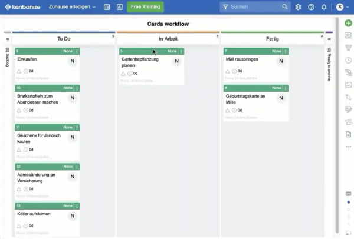

Zeitmanagement 3.0
Zeitmanagement 3.0 – jetzt erst recht!
Wenn Sie den Eindruck haben, für nichts mehr richtig Zeit zu haben, wenn Sie also unter Zeitmangel leiden – dann befinden Sie sich nicht nur in guter Gesellschaft, sondern benötigen ein Zeitmanagement 3.0. Die meisten Berufstätigen klagen über permanente Zeitnot.
Nun mögen Sie denken, dass alles besser würde, wenn Sie nur weniger zu tun hätten. Das aber ist ein Irrtum. Oft jedenfalls. Zeitnot verursacht Stress. Ihre Zeitnot rührt nicht von einem Zuviel an Aufgaben, sondern von deren ineffizienter Erledigung.
Ineffizient ist die Erledigung nämlich, weil Sie nur selten die Gelegenheit haben, sich einer Aufgabe konzentriert zu widmen. Büroalltag ist kein langer ruhiger Fluss der Selbstbestimmung, sondern ein turbulentes Gewässer. Ständig müssen Sie sich mit Störungen auseinandersetzen, z.B.
- Ihr Telefon klingelt
- der Kollege hat eine Frage
- neue Emails heischen nach Aufmerksamkeit
- der Vorgesetzte setzt kurzfristig ein Meeting an
Und um Ihr Dilemma komplett zu machen: Die Wissenschaft hat festgestellt, dass dieses Sperrfeuer aus Störungen über die Jahre Ihre Konzentrationsfähigkeit geschwächt hat. Selbst wenn es also einmal eine längere ruhige Phase geben sollte, können Sie die nur schwer nutzen. Dann stören Sie sich selbst, indem Sie z.B.
- in die Kaffeeküche oder zum Rauchen gehen
- Ihren Email-Eingang prüfen
- Ihr persönliches Handy checken
- das Gespräch mit konzentrierten Kollegen suchen
Vielleicht denken Sie nun, „Das ist halt so. Das kann man nicht ändern und ist das nicht auch normal?“ Und natürlich ist das auch erst einmal so – deshalb ist es doch aber nicht auch gut. Oder sind Sie zufrieden nach einem solchen störungsreichen Tag? Gehen Sie mit dem guten Gefühl, etwas geschafft zu haben, nach Hause?
Wahrscheinlich ist so ein gutes Gefühl nicht. Und das zurecht. Wer den ganzen Tag nicht dazu kommt, seine eigenen Aufgaben konsequent zu verfolgen, der kann nicht zufrieden sein. Nicht persönlich und auch nicht aus Unternehmenssicht. Denn solche unkonzentrierte Arbeit kostet schlicht nur unnötig Kraft, Zeit und Geld.
Wenn Sie den Eindruck haben, für nichts mehr richtig Zeit zu haben, wenn Sie also unter Zeitmangel leiden. Wenn die Aufmerksamkeit einer Sache gegenüber einem Sägezahnblatt gleicht – sie ist da, dann ist sie wieder weg, dann wieder da, dann wieder weg usw. –, dann wird viel Zeit für das mentale Umschalten vergeudet. Diese Zeit ist verschwendet und der ständige Wechsel leistet Fehlern Vorschub. Solche unkonzentrierte Arbeit ist also schlichtweg teuer. Sehr teuer.
Arbeiten in einem Störungsminenfeld kostet das Unternehmen Geld und die Mitarbeiter Gesundheit und Motivation.
Aber was können Sie tun?
Das ist die Stunde für Zeitmanagement 1.0!
Um einen anderen Umgang mit Ihrer Zeit geht es – allerdings nicht einfach nach alter Väter Sitte. Zeitmanagement ist kein neues Thema, aber es muss sich neuen Herausforderungen stellen.
Früher, beim Zeitmanagement 1.0, ging es darum, Aufgaben überhaupt systematisch abzuarbeiten. Kalender, ToDo-Liste, Tages- und Wochenpläne sowie eine Priorisierung standen im Vordergrund. Es galt eben, eine wachsende Menge von Aufgaben zu bewältigen.
Zeitmanagement 2.0 war die Reaktion auf die Erkenntnis, dass sich nicht alle Menschen in gleicher Weise organisieren. Selbstorganisation ist vielmehr von Persönlichkeitstyp und Biorhythmus abhängig. Daraus ergab sich die Notwendigkeit für mehr Selbstreflexion mittels Fragebögen und Checkliste für einen bewussteren Umgang mit den bisherigen Werkzeugen.
Und nun Zeitmanagement 3.0: Alle Werkzeuge und Selbstreflexion nützen wenig, wenn moderne Kommunikationsmedien und veränderte Vorstellungen vom beruflichen Miteinander es Ihnen unmöglich machen, Ihrem schönen Plan zu folgen. Darauf ist zu reagieren mit weiteren Techniken, die Sie einerseits schützen, andererseits aber auch nicht isolieren. So ist es z.B. heute notwendig, das Nein-sagen zu üben, Konzentrationstechniken zu praktizieren oder störungsfreie Zonen einzurichten. Denn auch wenn es schon sprichwörtlich ist, dass Multitasking und ständige Unterbrechungen zu Ineffizienz führen, ergeben sich Auswege aus dieser Praxisrealität nicht von allein. Zeitmanagement 3.0 geht ganz klar darum, überhaupt wieder zu lernen konzentriert und fokussiert zu arbeiten. Anleitung und Training sind notwendig. Am besten für ganze Teams oder Abteilungen, denn je breiter der Konsens darüber, dass und wie sich etwas ändern soll, desto besser. Es geht um nicht weniger als eine neue Arbeitskultur für mehr Zufriedenheit und weniger Verschwendung.
Wenn Sie jetzt Lust darauf bekommen haben sollten, sich näher mit Zeitmanagement 3.0 zu befassen, dann schreiben Sie mir doch eine Email (info@zeitgewinn-hamburg.de) und ich helfe Ihnen, für sich und Ihre Kollegen das Thema anzugehen.
Weitere Artikel
Puffer sichern Flow
Es wird allerhöchste Zeit, sich von der Idee, dass nur wer am Limit arbeitet, effizient sei, zu verabschieden. Unter Volllast, ganz ohne Puffer zu arbeiten ist eine „gute“ Voraussetzung für Unzuverlässigkeit, Fehler …

Kollaboration im Office mit Kanbanize
Ein Tool, was mich für die digitale Kollaboration im Office begeistert ist Kanbanize. Dort kann man wirklich sehr fortgeschritten und smart zusammenarbeiten. Mit seinen verschiedenen Perspektiven auf den Flow im Office, der …